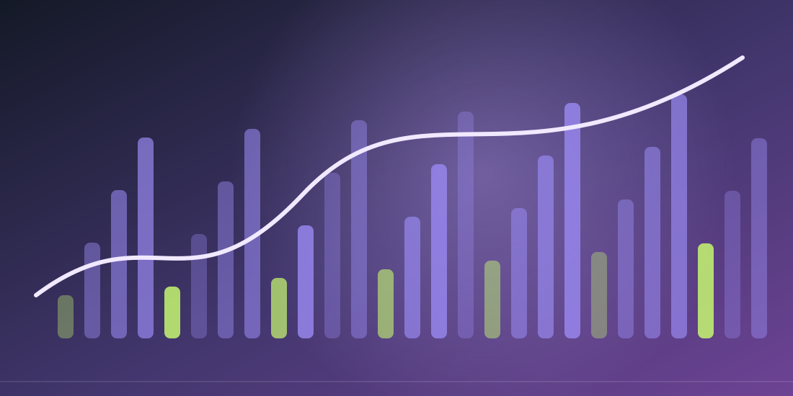
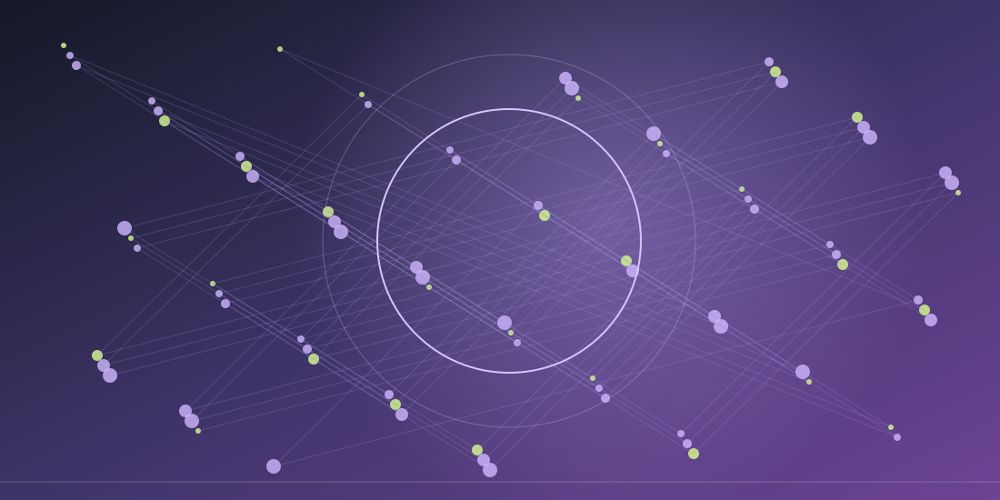
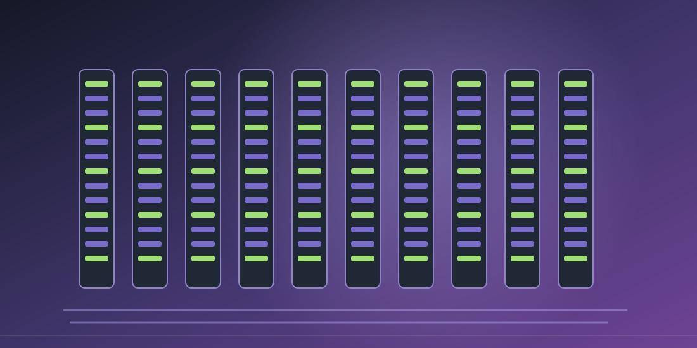
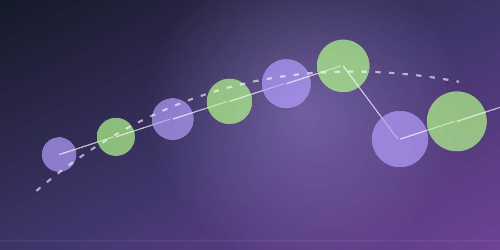

Для сильных моделей мало только GPU
Нужны ясные правила, доступ к данным, вычислительная инфраструктура, качественная оценка и кадры. Недостаток одного звена тормозит остальные.
Российские языковые модели: кто их создаёт, на каких данных они учатся и каким может стать следующий этап развития. Специальный цифровой выпуск по исследованию ИТМО.

Выберите свой путь: главное за несколько минут, последовательное погружение или работа с фактами и моделями.
Команда ITMO Open Source и Института искусственного интеллекта ИТМО изучила состояние российских больших языковых моделей: кто их разрабатывает, на каких данных они учатся, в чём выигрывают и отстают от зарубежных решений и что мешает отрасли расти.
Это не рейтинг «лучшего чат-бота» и не прогноз стоимости всего рынка LLM. Это анализ отраслевой инфраструктуры — моделей, данных, вычислений, оценок качества и возможностей применения.
Смысл не в том, чтобы заменить мировой массив знаний российским. Русский язык нужен для локального контекста, а многоязычная база — для универсальных способностей модели.
Разобраться в цифре →Главное из 45 страниц — без потери важнейших оговорок и с привязкой к разделам оригинала.
Нужны ясные правила, доступ к данным, вычислительная инфраструктура, качественная оценка и кадры. Недостаток одного звена тормозит остальные.
Библиотеки, архивы, научные и профессиональные коллекции способны улучшать качество отраслевых решений — при законном доступе и подготовке.
Российские LLM успешны в специализированных вопросах о языке, праве, истории и культурных реалиях. Это не означает общего превосходства во всех задачах.
Разноязычные научные тексты, код и знания расширяют способности модели. Универсальной LLM необходим международный корпус.
Фильтрация, дедупликация, экспертная разметка и проверенные синтетические примеры могут давать больше пользы, чем простое увеличение корпуса.
Государство, бизнес, университеты и open source-сообщество должны разделить роли: от инфраструктуры и методики до продукта.
«Вопрос не в количестве, а в качестве».Иван Оселедец · генеральный директор AIRI · исследование ИТМО, стр. 26
Российский языковой корпус определяет качество локального контекста. Международные данные и код расширяют диапазон задач.

Эксперты оценивают возможную долю русского языка в универсальном обучающем корпусе. Около 10% один из специалистов считает достаточным для хорошей русской речи; при чрезмерной доле одного языка уменьшается разнообразие данных.
Это не означает, что 10% подойдут любой модели или что остальные проценты обязательно должны быть английскими. Состав смеси — предмет экспериментов.
Исследование, стр. 22–25. Доли показаны схематически, не измерены для конкретных моделей.
Стр. 23. Не единый рейтинг качества: размеры из разных корпусов и методик сбора напрямую несопоставимы. EN для HPLT v2 — приблизительно «в пять раз больше», по тексту исследования.
Открытый интернет: широкий охват знаний, языков и тематик, но требуется очистка от шума и дублей.
Архивы и корпоративные материалы: глубокая предметная экспертиза, но с правовыми, качественными и организационными ограничениями.
Экспертные и синтетические примеры: обучение поведению модели, логике решения задач и полезным форматам ответа — после проверки качества.
Исследование описывает одновременно нехватку вычислительных мощностей, специалистов инфраструктуры и проверенных русскоязычных корпусов. Оценка разрыва с США в 660 раз приведена из внешнего источника и не является прямым измерением самой команды ИТМО.
PDF, стр. 2, 12–14 · ComNews, 14.05.2026
16 позиций из таблиц исследования: большие технологические компании, академические команды и независимые разработчики. Откройте карточку, отфильтруйте или сравните два подхода.

Сравнение по происхождению, доступности и назначению — не по «интеллекту» или бенчмарк-баллам. Обзору ИТМО не хватает единых числовых оценок для такого ранжирования.
Бенчмарк — стандартизированное испытание. Культурные знания, математика, программирование, документы и безопасность требуют разных наборов задач.
Семь этапов из технической таблицы ИТМО. Листайте этапы стрелками, колёсиком мыши или жестом по экрану: от словаря токенов до задач с автоматически проверяемым результатом.

Примеры применения по направлениям исследования. Для каждой сферы — задача, данные и оговорка о границах качества.
Задача: структурировать анамнез из разговора с пациентом.
Нужны: обезличенные диалоги, истории болезни, российские стандарты.
Контроль: решение принимает специалист; особая защита данных.
Задача: искать нормы, резюмировать дела и выявлять риски.
Нужны: актуальные акты, судебная практика, проверяемые ссылки.
Контроль: юридическая проверка, актуальность баз.
Задача: поиск по техническим нормативам и проектной документации.
Нужны: отечественные строительные нормы, проектные архивы.
Контроль: верификация инженером.
Задача: разбор отраслевых отчётов и накопленной экспертизы.
Нужны: геологические архивы, региональные данные, отраслевой словарь.
Контроль: конфиденциальность и предметная оценка.
Задача: объяснять темы и помогать с материалами.
Нужны: учебные программы, качественные русскоязычные источники.
Контроль: проверка фактов и педагогическая экспертиза.
Задача: классификация обращений и поиск нормативного ответа.
Нужны: локальные регламенты и актуальные базы знаний.
Контроль: права граждан, персональные данные, человек в контуре.
В исследовании конкурентоспособность российских LLM — результат совместной работы, а не достижение одной компании.

Правовые механизмы доступа к данным, исследовательские вычислительные центры и правила для отрасли.
Внедрение моделей в реальные процессы, отраслевые датасеты, кооперация и открытые разработки.
Методология подготовки данных, архитектуры, независимые тесты и исследовательские гипотезы.
Подготовка инженеров, экспертов по предметным данным и передача практического опыта.
Далее — варианты кооперации из исследования и отдельная редакционная гипотеза для бизнеса.
Агентные рынки: компании обмениваются готовыми отраслевыми помощниками, вместо дублирования однотипных разработок.
Модели-полуфабрикаты: общую отраслевую модель донастраивают под предприятие.
Компактные LLM + базы знаний: меньше ресурсов на запуск, больше внимания к инженерии данных и поиску.
Самая доступная точка входа для компании — не обучение собственного конкурента GPT, а небольшой проверяемый пилот: один рабочий процесс, измеримый результат, локальная база знаний и оценка качества на реальных запросах.
Тест: взять 30 типовых документов, сравнить ответы человека и системы и посчитать точность, экономию времени и критические ошибки. Это предлагаемая практическая проверка, а не эксперимент, проведённый авторами PDF.
Нажмите на термин, чтобы раскрыть объяснение. Определения адаптированы из словаря на странице 44 оригинального отчёта.
Издание следует структуре исследования ИТМО, но не заменяет полный PDF. Сохранены ссылки на оригинальные данные; цифры и экспертные оценки не смешаны с нашими пояснениями.
В PDF приведён майский прогноз 2026 года: $2,59 трлн мировых расходов на ИИ в 2026 году. В сентябре Gartner выпустил обновлённую оценку $2,7 трлн. Поэтому цифра из отчёта исторически корректна для майского выпуска, но не является самой свежей на 20.11.2026. Пересчёт в рубли зависит от выбранного курса.
В стр. 8 и 42–43 PDF пояснения к этим категориям изложены неодинаково. Поэтому здесь мы не выдаём краткую трактовку из стр. 8 за юридически точное определение. При правоприменении нужно смотреть полный текст ФЗ № 243-ФЗ и последующие подзаконные акты.
Авторы провели 14 глубинных полуструктурированных интервью с представителями бигтеха, академических институтов, независимых команд и других участников отрасли; дополнили их обзором моделей, бенчмарков и этапов обучения. Это качественное исследование экспертных мнений, не статистически репрезентативный опрос всех разработчиков России.
Источник: исследование ИТМО, 2026, 45 страниц.
Наша работа: редакционная структура, объяснения терминов и цифр, интерактивные таблицы, сценарный ползунок и практическая гипотеза.
Не делали: собственное тестирование LLM, новое экспертное исследование или независимую проверку всех заявлений каждого интервьюируемого.